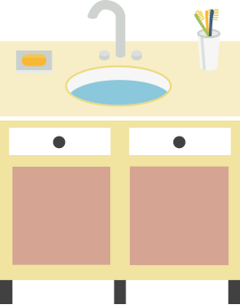
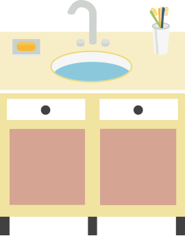
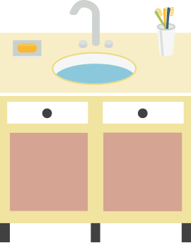
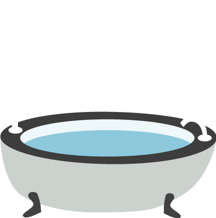
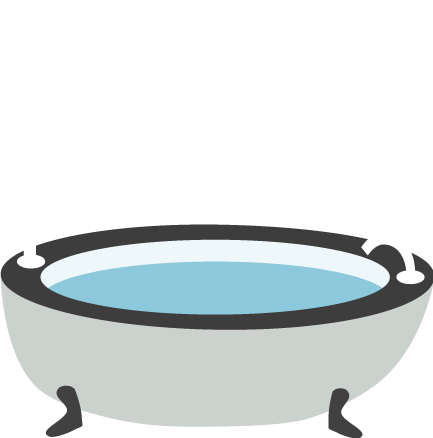
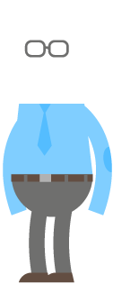
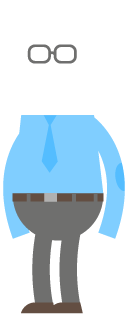

objecten volgen de scrollbar, gedaan met Javascript

 

objecten volgen de scrollbar, gedaan met Javascript

CSS keyframe animaties op objecten "plakken" met Javascript,
Geeft de meeste vrijheid in je animaties qua verloop.
 


Objecten volgen de scrollbar, gedaan met alleen CSS, geen JavaScript!
animation-timeline: view() geintroduceerd in CSS in 2023!
 
